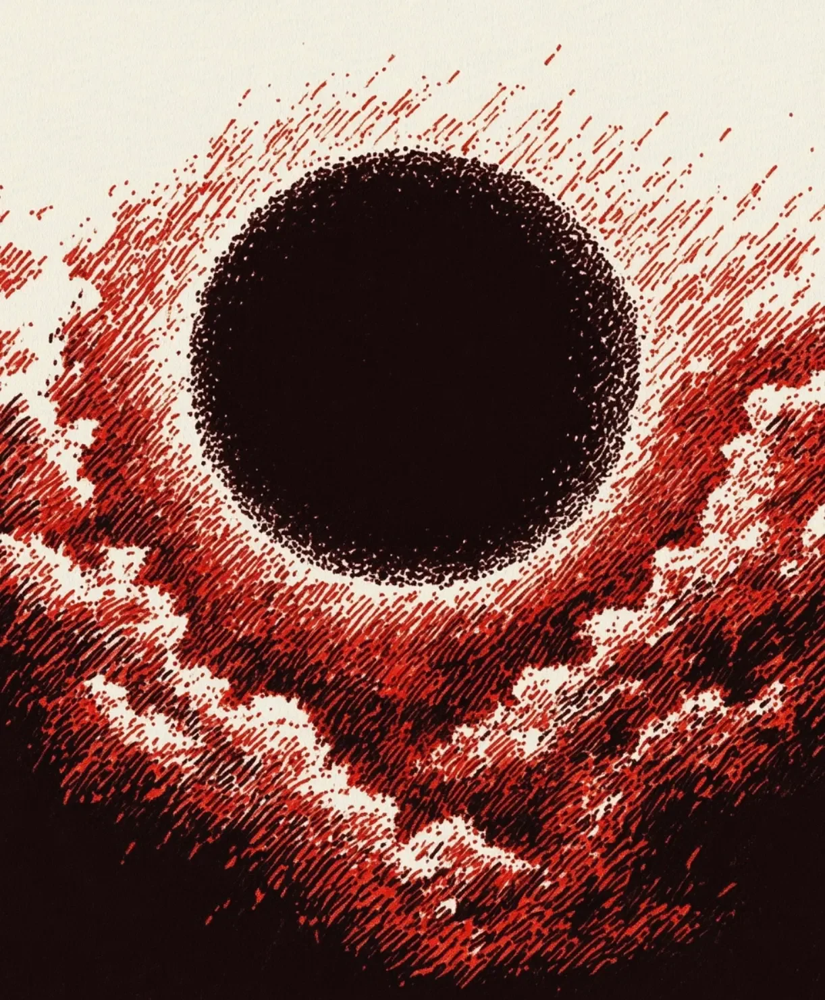

민준은 수박을 향해 오함마를 내리찍었다.
[Min-jun swung the sledgehammer down onto the watermelon.]
수박이 으깨지며 붉은 과육이 튀었다. 하지만 소리는 없었다.
[The watermelon crushed, sending red flesh flying. But there was no sound.]
오디오 인터페이스의 파형은 죽은 사람의 심전도처럼 평평했다. 민준은 창가로 달려갔다.
[The waveform on the audio interface was flat, like the ECG of a dead man. Min-jun ran to the window.]
하늘은 핏빛으로 물들어 있었다. 그리고 그 중심에, 완벽한 검은 구(球)가 떠 있었다.
[The sky was dyed blood-red. And in the center, a perfect black sphere floated.]
도로 위의 차들은 무성 영화처럼 뒤엉켰다. 사람들은 입을 찢어질 듯 벌리고 비명을 질렀지만, 세상은 공허한 벙어리들의 무대였다.
[Cars on the road tangled like a silent movie. People opened their mouths as if to tear them apart, screaming, but the world was a stage for empty mutes.]
민준은 귀를 막았다. 자신의 심장 소리조차 들리지 않았다.
[Min-jun covered his ears. He couldn’t even hear his own heartbeat.]
검은 구가 내려오며 세상을 덮쳤다. 공포조차 소리가 없어 건조하게 바스라졌다.
[The black sphere descended, consuming the world. Even terror, bereft of sound, crumbled dryly away.]
이것이 끝이었다. 이유도, 의미도 모른 채 맞이하는 절대적인 침묵.
[This was the end. An absolute silence greeted without reason or meaning.]
(수십억 광년 밖, 초공간의 침실)
[(Billions of light-years away, in a hyperspace bedroom)]
그는 신경질적으로 뒤척였다.
[He tossed and turned, irritated.]
“아, 진짜 못 자겠네.”
[”Ah, I really can’t sleep.”]
그는 짜증 섞인 손길로 침대 옆 협탁을 더듬어 검은색 폼을 집어 들었다.
[With an annoyed hand, he fumbled on the nightstand and picked up a piece of black foam.]
“저 푸른 점, 왜 이렇게 시끄럽게 웅웅거려?”
[”That blue dot, why is it humming so loudly?”]
그는 검은 구체를 귓구멍 깊숙이 쑤셔 넣었다.
[He shoved the black sphere deep into his ear canal.]
지구라 불리는 소음이 마침내 차단되었다.
[The noise called Earth was finally blocked out.]
“이제야 좀 살겠네.”
[”Finally, I can live.”]
그는 다시 포근한 어둠 속으로 빠져들었다.
[He drifted back into the cozy darkness.]